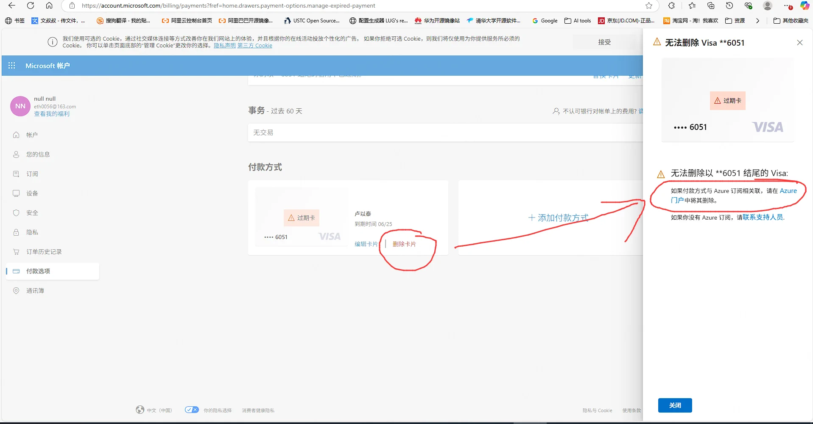
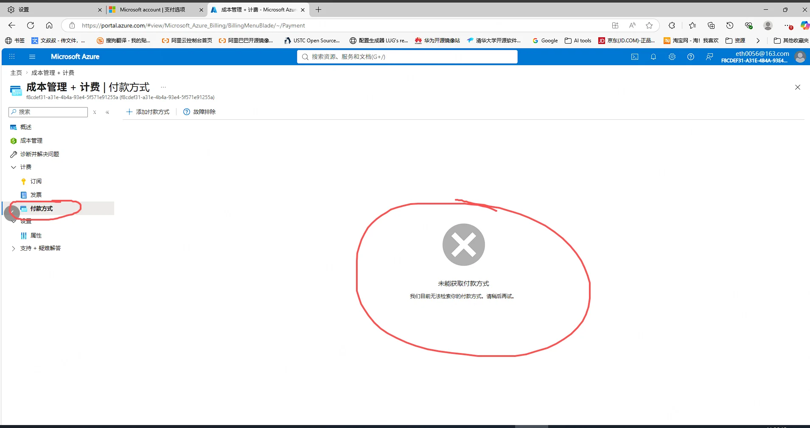

Microsoft 付款方式问题截图
问题说明：我无法删除尾号为 6051 的过期 Visa 卡。 Microsoft 账户提示该付款方式与 Azure 订阅相关，需要在 Azure 门户中删除； 但 Azure 门户的“付款方式”页面无法获取付款方式，登录时还出现租户账户错误。
1. Microsoft 账户提示无法删除银行卡
相关页面： Microsoft 账户付款选项

2. Azure 门户无法获取付款方式
相关页面： Azure 成本管理与计费－付款方式

3. 登录时出现 Microsoft Services 租户错误